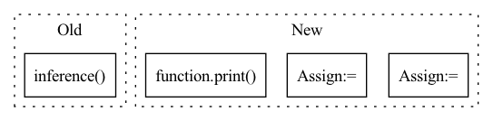

Pattern ID :32409

Before Change
trainer = Trainer(gpus = [device])
model = torch.load(self._module_dict[target]["path"], map_location = "cpu", pickle_module = dill)
model.eval()
model.inference()
results = get_predictions(trainer,model, dataloader, self._module_dict[target]["output_column_names"], ["event_no"])
dataframes.append(results.sort_values("event_no").reset_index(drop = True))
df = self._combine_outputs(dataframes)
self._make_pipeline_database(outdir,df, database)
After Change
dataloaders, event_batches = self._setup_dataloaders(chunk_size = chunk_size, db = database, pulsemap = pulsemap, selection = None, persistent_workers= False)
i = 0
for dataloader in dataloaders:
print("CHUNK %s / %s"%(i, len(dataloaders)))
df = self._inference(device, dataloader)
truth = self._get_truth(database, event_batches[i].tolist())
retro = self._get_retro(database, event_batches[i].tolist())
self._append_to_pipeline(outdir, truth,retro, df, i)
i +=1
else:
print(outdir)
print("WARNING - Pipeline named %s already exists! \n Please rename pipeline!"%self._pipeline_name)
In pattern: SUPERPATTERN
Frequency: 3
Non-data size: 4
Instances
Fragment ID: 94574466
Project Name: icecube/graphnet
Commit Name: 168ec8b73fbc8ab36f97a9d1cdb750a69b0fd137
Time: 2022-04-04
Author: rahn@outlook.dk
File Name: src/graphnet/data/pipeline.py
M Class Name: InSQLitePipeline
N Class Name: InSQLitePipeline
M Method Name: __call__(4)
N Method Name: __call__(3)
M Parent Class: ABC
N Parent Class: ABC
M File Name: src/graphnet/data/pipeline.py
N File Name: src/graphnet/data/pipeline.py
M Start Line: 50
M End Line: 64
N Start Line: 44
N End Line: 64
'>
Before Change
TensorBoard=TensorBoard,
save_model=save_model)
scARObj.inference()
print("===========================================\n Saving results...")
output_path01, output_path02, output_path03, output_path04 = os.path.join(output_dir, f"denoised_counts.pickle"), os.path.join(output_dir, f"BayesFactor.pickle"), os.path.join(output_dir, f"native_frequency.pickle"), os.path.join(output_dir, f"noise_ratio.pickle")
After Change
print(" ... count_matrix:")
count_matrix.info(max_cols=10)
if args.empty_profile:
empty_profile = pd.read_pickle(empty_profile_path)
print(" ... calculate empty profile using empty droplets")
assert (empty_profile.index == count_matrix.columns).all()
else:
empty_profile = count_matrix.sum(axis=0)/count_matrix.sum().sum()
empty_profile = empty_profile.to_frame()
print(" ... calculate empty profile using cell-containing droplets")
print("-------------------------------------------")
print(" ... empty_profile:")
empty_profile = empty_profile.fillna(0) // replace missing values with zeros
'>
Fragment ID: 94574481
Project Name: novartis/scar
Commit Name: 8ae88f67e01a424b60d8dfe722f107194e93ae77
Time: 2022-01-25
Author: caibin.sheng@novartis.com
File Name: scAR/__main__.py
M Class Name: AnonimousClass
N Class Name: AnonimousClass
M Method Name: main(0)
N Method Name: main(0)
M Parent Class:
N Parent Class:
M File Name: scAR/__main__.py
N File Name: scAR/__main__.py
M Start Line: 78
M End Line: 91
N Start Line: 27
N End Line: 80
'>
Before Change
trainer = Trainer(gpus = [device])
model = torch.load(self._module_dict[target]["path"], map_location = "cpu", pickle_module = dill)
model.eval()
model.inference()
results = get_predictions(trainer,model, dataloader, self._module_dict[target]["output_column_names"], ["event_no"])
dataframes.append(results.sort_values("event_no").reset_index(drop = True))
df = self._combine_outputs(dataframes)
self._make_pipeline_database(outdir,df, database)
After Change
if os.path.isdir(outdir) == False:
dataloaders, event_batches = self._setup_dataloaders(chunk_size = chunk_size, db = database, pulsemap = pulsemap, selection = None, persistent_workers= False)
i = 0
for dataloader in dataloaders:
print("CHUNK %s / %s"%(i, len(dataloaders)))
df = self._inference(device, dataloader)
truth = self._get_truth(database, event_batches[i].tolist())
retro = self._get_retro(database, event_batches[i].tolist())
self._append_to_pipeline(outdir, truth,retro, df, i)
i +=1
else:
print(outdir)
print("WARNING - Pipeline named %s already exists! \n Please rename pipeline!"%self._pipeline_name)
'>
Fragment ID: 94574485
Project Name: graphnet-team/graphnet
Commit Name: 168ec8b73fbc8ab36f97a9d1cdb750a69b0fd137
Time: 2022-04-04
Author: rahn@outlook.dk
File Name: src/graphnet/data/pipeline.py
M Class Name: InSQLitePipeline
N Class Name: InSQLitePipeline
M Method Name: __call__(4)
N Method Name: __call__(3)
M Parent Class: ABC
N Parent Class: ABC
M File Name: src/graphnet/data/pipeline.py
N File Name: src/graphnet/data/pipeline.py
M Start Line: 50
M End Line: 64
N Start Line: 44
N End Line: 64